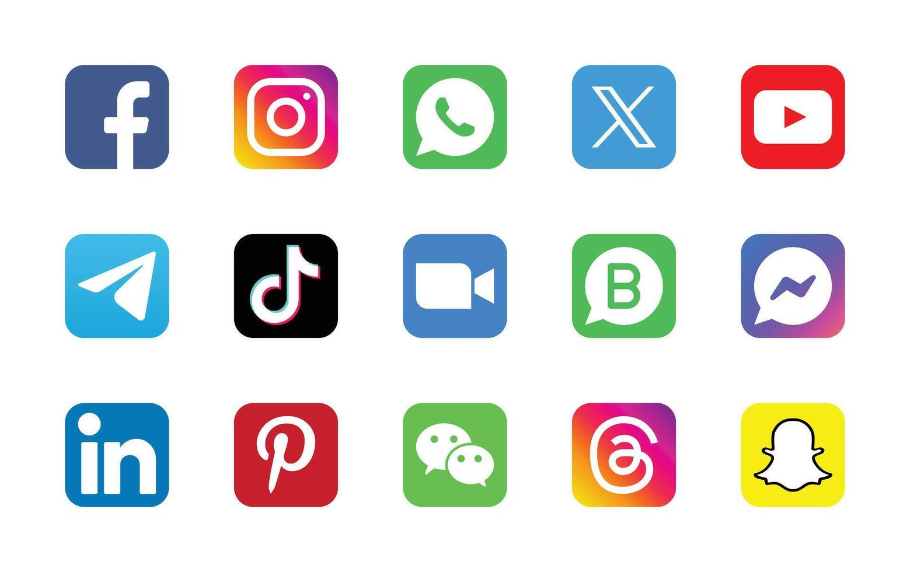

Uso adecuado de Redes Sociales
"La Puerta de Entrada"

Cada vez que haces clic, dejas una huella. Algunos la siguen para conocerte, otros para usarte. ¿Sabes qué dice tu rastro digital de ti hoy?
Las redes sociales son plataformas digitales formadas por comunidades de individuos con intereses, actividades o relaciones en común (como amistad, parentesco o trabajo).
A diferencia de los medios de comunicación tradicionales (donde uno emite y muchos reciben), las redes sociales permiten un contacto horizontal y una interacción bidireccional constante.
Clasificación General
Aunque solemos meterlas a todas en un mismo saco, se dividen principalmente en dos tipos:
- Redes Horizontales o Genéricas: No tienen una temática definida. Su objetivo es simplemente conectar personas (ej. Facebook, X/Twitter, Instagram).
- Redes Verticales: Son temáticas y reúnen a personas con un interés específico (ej. LinkedIn para el ámbito profesional, Strava para deportistas o Goodreads para lectores).